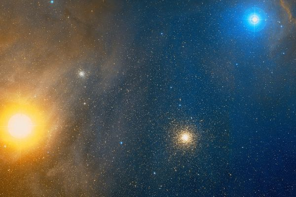
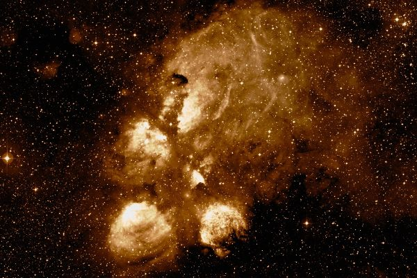

Латинское название: Scorpius
Чудовищное существо, возможно, порождение Геи, возможно, живущее в море и используемое Посейдоном в террористических целях. А возможно, вызванное Артемидой из недр горы Колоны на острове Хиос.
Знаменито тем, что напало на Ориона и закусало его до смерти. Или по крайней мере заставило бежать знаменитого охотника.
Также Скорпион как созвездие нехорошо известен тем, что именно он напугал коней Фаэтона, они понесли и возница, не умея удержать их, поплатился за это жизнью.
Шаровое скопление. Он заслуживает внимания просто с эстетической точки зрения: его групповой портрет в цвете вместе с красным Антаресом, голубой σ Скорпиона и еще одним шаровиком NGC 6144 очень эффектен!
Газопылевая эмиссионная туманность NGC 6334 (также След или Коготь Медведя).
